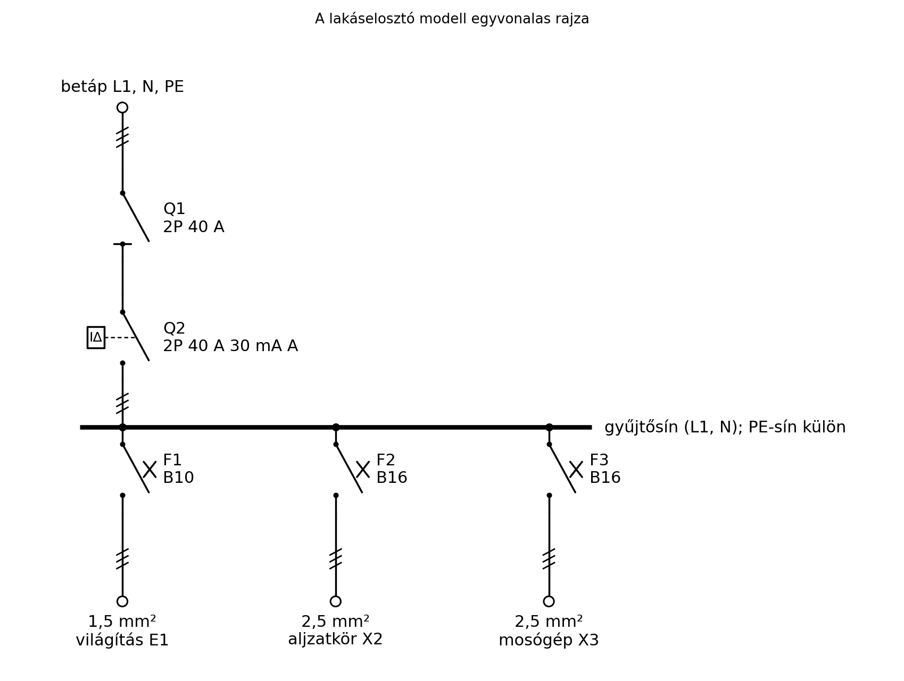

A kapcsolódó elmélet: tankönyv, 40.2 alfejezet.
Cél. A tanműhelyi modell megépítése a terv szerint, a bekötés ellenőrzése és dokumentálása.
Eszközök és anyagok. A fenti eszközlista szerint; szigetelésvizsgáló, multiméter, FI-tesztműszer, csavarhúzó, érvéghüvely-fogó.
Biztonsági korlát. A feladat feszültségmentes tanműhelyi modellen végezhető. Hálózati feszültségen önállóan ne dolgozz. A teszteléshez csak törpefeszültséget vagy felügyelet melletti, előírásos hálózati feszültséget használj.
A feszültségmentesítés öt biztonsági szabálya:
Szerelési recept – lakáselosztó modell
A 4. lépés (felpattintás) mozdulatát az alábbi oldalnézeti ábra mutatja: (1) a készülék felső hornyát a sín felső peremére akasztod, (2) ráhajtod, amíg a rugós retesz bepattan; (3) a ferdén ráerőltetett, félig bepattant készülék billeg – ez hiba; (4) levételkor a reteszt csavarhúzóval lehúzod, és a készüléket kibillented. Az elölnézet a 35 mm-es sínt és a 17,5 mm-es modulszélességet mutatja.
A billegő készülék kapcsába kötött vezeték húzásra a készüléket is elmozdítja, ezért a bekötés előtt minden készüléket próbálj meg finoman elmozdítani a sínen. A HTML-kiadásban a lépések egyenként lejátszhatók.
Ellenőrzési pontok a szerelés után:
A folytonosságméréshez használjunk kis ellenállásmérést. Egy 1,5 mm²-es rézvezető ellenállása 5 m hosszon:
A csavarkötések és mérőzsinórok miatt a valós érték ennél nagyobb lehet, de általában 0,1 Ω felett már érdemes ellenőrizni a kötéseket. A pontos határértéket a mérési utasítás és a műszer pontossága határozza meg.
A lakásszerelés egyik leggyakoribb feladata a főzőlap (tűzhely) és a villanybojler bekötése; mindkettőnél egy rossz híd vagy egy elhagyott pólus drága hibát okoz. Öt szabály:
Az alábbi ábra a kapocsléc mögé is benéz: a modellkészülékben három egyforma, 2,4 kW-os fűtőkör van (R1 az 1–4, R2 a 2–4, R3 a 3–5 kapocs között, a 4–5 kapcsot az N-híd köti össze), így látszik, melyik fázisra mennyi terhelés jut.
Számpélda (7,2 kW).
Bojler. Önálló áramkör (a Mintaházban F10 B16), a készülék előtt kétpólusú leválasztóval (kétpólusú kapcsoló vagy a gyártó által előírt kétpólusú bontás; ellenőrizendő: gyártói utasítás); a PE a tartályra (a készülék PE-kapcsára) kerül; fürdőszobában a zónaszabályok érvényesek (lásd Aljzatkörök és fogyasztói csatlakozások, nedves helyiségek (tankönyv, 16.4)). Átadás előtt a szigetelésmérést a fűtőbetéttel együtt L és N összekötve, PE-vel szemben (L+N–PE) végezd: a fűtőbetét miatt L és N között folytonosság van, ezért az L–N mérés nem szigetelési, hanem ellenállás-érték.
Ellenőrző mérés (feszültségmentesen). A fűtőkörök ellenállása az 1–4, 2–4 és 3–5 (a 4–5 híd után 3–4) kapocs között: egy 2,4 kW-os körnél Ω. A hidak felhelyezése után a hidalt kapcsok között 0 Ω-ot kell mérni; a fázis-kapcsok és a PE között szakadást (OL).
Tipikus hibák.
Melyik bekötési módnál terheli a legnagyobb áram az N vezetőt, és miért közel nulla az N árama a szimmetrikus 3N~ bekötésnél?
Cél. Megépíted a Lakás- és épületelosztó felépítése (tankönyv, 17.2) alfejezet kidolgozott tervpéldájának elosztóját, de egyetlen FI helyett – a tervezési algoritmus 2. lépése szerint – két FI-csoporttal, saját nullasínekkel. A modell feszültségmentesen, műhelyben épül; feszültség alatti próbát csak jogosult oktató végez.
Biztonsági korlát. A feladat tanműhelyi környezetre vagy jogosult oktató felügyeletére vonatkozik; hálózati feszültségen önállóan ne végezd. Minden átkötés és mérés előtt: (1) lekapcsolás, (2) visszakapcsolás elleni biztosítás, (3) a feszültségmentesség ellenőrzése, (4) földelés és rövidre zárás, ha indokolt, (5) a szomszédos feszültség alatti részek lefedése.
Készülékek. Q1 főkapcsoló 4P 40 A; F0 túlfeszültség-levezető (SPD), T2, 3+1 kapcsolás (ellenőrizendő: MSZ HD 60364-5-534); Q2 és Q3 FI 4P 40 A / 30 mA, A típus; F1–F9 egypólusú és F10 háromfázisú kismegszakító; két háromfázisú fésűs sín (FI-csoportonként egy); két különálló nullasín (N1 a Q2, N2 a Q3 kimenete után) és közös PE-sín.
Körkiosztás. A háromfázisú fésűs sínen a helyek sorban az L1, L2, L3 fázist kapják, ezért a készülék helye dönti el a fázisát:
| Kör | Fogyasztó | Védelem | Fázis | FI / N-sín | Hely a sínen |
|---|---|---|---|---|---|
| F1 | Világítás 1 (nappali, konyha) | B10 | L1 | Q2 / N1 | Q2-sín 1. |
| F9 | Sütő | B16 | L2 | Q2 / N1 | Q2-sín 2. |
| F4 | Aljzatok 2 (háló, előszoba) | B16 | L3 | Q2 / N1 | Q2-sín 3. |
| F5 | Mosogatógép | B16 | L1 | Q2 / N1 | Q2-sín 4. |
| F6 | Mosógép | B16 | L2 | Q2 / N1 | Q2-sín 5. |
| F8 | Klíma | B10 | L3 | Q2 / N1 | Q2-sín 6. |
| F10 | Főzőlap | 3P B16 | L1–L3 | Q3 / N2 | Q3-sín 1–3. |
| F3 | Aljzatok 1 (nappali, konyha) | B16 | L1 | Q3 / N2 | Q3-sín 4. |
| F2 | Világítás 2 (háló, fürdő, előszoba) | B10 | L2 | Q3 / N2 | Q3-sín 5. |
| F7 | Bojler | B16 | L3 | Q3 / N2 | Q3-sín 6. |
Így mindkét helyiségcsoportban a világítás és az aljzatkör külön FI alatt van, és minden végáramkör 30 mA-es védelmet kap. A kismegszakítók jelleggörbéjét és a vezetékeket valós tervben méretezni kell (itt tanulási értékek; ellenőrizendő: MSZ HD 60364-4-43, -5-52).
Anyaglista és modulszám.
| Tétel | Darab | Modul |
|---|---|---|
| Q1 4P főkapcsoló | 1 | 4 |
| F0 SPD (3+1) | 1 | 4 |
| Q2, Q3 4P FI | 2 | 8 |
| F1–F9 1P kismegszakító | 9 | 9 |
| F10 3P kismegszakító | 1 | 3 |
| Összesen | 28 |
A 25 %-os tartalékkal modul kell, tehát 2 × 18 modulos (36 modulos) doboz felel meg. Ezen felül: DIN-sínek, 2 db 3P fésűs sín (a nem használt csapok szigetelve, végzáróval), N1, N2 és PE sín, H07V-K/H07V-U vezetékek (barna, fekete, szürke, világoskék, zöld-sárga), érvéghüvelyek, feliratozó, áramköri jegyzék.
Szerelési sorrend.
A két nullasín kialakítását a Lakás- és épületelosztó felépítése (tankönyv, 17.2) alfejezet Mintaház-rajza (a Q2 → N1, Q3 → N2 elv) mutatja.
Ellenőrző mérések (feszültségmentesen, a Q1, Q2, Q3 kikapcsolva, az SPD és a fogyasztók leválasztva):
| Mérés | Várt eredmény a modellen |
|---|---|
| PE-folytonosság: betáp PE – minden kör PE-kapcsa | 0,1 Ω alatti nagyságrend |
| Szigetelés 500 V DC: L1, L2, L3, N – PE | ≥ 1 MΩ (ellenőrizendő: MSZ HD 60364-6) |
| Folytonosság N1 – N2 (Q2, Q3 kikapcsolva) | OL: a két csoport nullája nem találkozik |
| Folytonosság N1, N2 – PE | OL |
| Fázissorrend a 3P körön (feszültség alatt, oktató) | L1–L2–L3, jobbforgó |
| Műszeres FI-vizsgálat mindkét csoporton (oktató) | és kioldási idő a Védelmi mérések gyakorlata és a jegyzőkönyv kitöltése (tankönyv, 42.2) alfejezet szerint |
Időkeret: 6 óra. Értékelőlap (100 pont) – a Gyakorlati vizsgafeladatok és hibakeresés, értékelési szempontok (tankönyv, 44.3) (44.3) egységes rubrikájának kategóriái, feladatspecifikus részpontokkal:
| Kategória: feladatspecifikus részpontok | Pont |
|---|---|
| rajz és terv: terv értelmezése, modul- és fáziskiosztás | 15 |
| szerelés: kötések, nyomaték, vezetés 15; az N-csoportok helyessége 10 | 25 |
| mérés és jegyzőkönyv | 20 |
| működés és működési próba | 20 |
| dokumentáció: feliratozás és áramköri jegyzék | 10 |
| munkavédelem és rend | 10 |
Kizáró hibák (mindenütt azonosak): feszültség alá helyezés engedély nélkül; a védővezető hiánya vagy felcserélése; az öt biztonsági szabály elmulasztása; a védelem kiiktatása; életveszélyes állapot átadása (ezen a modellen ilyen az N1 és az N2 összekötése).
Tünet. A modell feszültség alá helyezése után bekapcsoljuk Q1-et, majd Q2 FI-relét: ez rendben van. Az F2 aljzatkör egy fogyasztójának bekapcsolásakor (terhelőáram folyásakor) a FI-relé azonnal leold, az F2 kismegszakító nem. (Ha a FI már az F2 kismegszakító bekapcsolásakor, terhelés nélkül old le, az inkább az F2 kör L–PE szigetelési hibájára utal; lásd a 6. feladatot.)
Hipotézis. A FI-relé nulla–fázis egyenlege megbomlik; valószínűleg a FI után a N és a PE vezető összeér, vagy a betáplálás N vezetője rossz sínre kerül.
Mérés. Feszültségmentesítés (öt szabály) után az F2 kör N vezetőjét leválasztjuk a N-sínről, a fogyasztókat lekötjük (az érzékeny elektronikát nem terheljük 500 V-tal), és csak ezután kapcsolunk szigetelésvizsgálót (500 V DC) N és PE közé. Ha a N nincs leválasztva, a mérés a betáplálási N–PE összeköttetést (TN-C-S rendszerben ez a betáplálásnál össze van kötve) mérné, és közel 0 Ω-ot kapnánk. A mért érték közel 0 Ω (például 0,02 Ω; a szigetelésvizsgáló 0 MΩ-ot jelez), miközben L1–N között 45 MΩ, L1–PE között 50 MΩ. Ez azt mutatja, hogy a N és a PE között fémes, szándékolatlan összeköttetés van.
Ok. Az egyik aljzatkör bekötésekor a kék nullavezetőt a N-sín helyett a PE-sínnel közös, rossz kialakítású sorkapocsba szorították, és a PE-sínnel érintkezik. Amint az érintett kört bekapcsolják, az üzemi áram egy része a PE-n át tér vissza, ezt a FI-relé hibaáramként érzékeli, és leold. A FI akkor old, amikor terhelőáram folyik; a közös N-sín miatt ez más kör terhelésekor is előfordulhat, ezért a hibás kört a körönkénti N-leválasztás és mérés azonosítja.
Javítás. A vezetéket a FI után a megfelelő N-sínre kell áthelyezni, a kötést újra meg kell húzni, majd a mérést megismételni. A FI-relé csak akkor kapcsolható be, ha a N-PE szigetelési ellenállás ismét legalább 1 MΩ.
Megelőzés. A szerelés során a PE, N és L1 vezetékeket mindig külön útvonalon, színkód szerint, egymástól jól elkülönítve vezessük. A FI utáni N-szakaszokat soha ne kössük össze a védővezetővel.
A hibát az oktató építi be feszültségmentes modellen; a tanuló a tünetből és a mérésekből azonosítja. Az EK3 kártya a kétcsoportos (második fokozatú) modellhez való. A folytonosságot és a szigetelést mindig lekapcsolt Q1 és FI mellett mérd.
| Kártya | Beépítés | Tünet | Mérés és várt (hibás) érték | Javítás |
|---|---|---|---|---|
| EK1 | N–PE összeérés a FI után | a FI terheléskor old | a kör N-je (sínről leválasztva) – PE: ≈ 0 Ω / 0 MΩ | az összeérés megszüntetése, újramérés |
| EK2 | egy kör N-je a FI előtti N-kapocsra (betáp N) kötve | a FI e kör terhelésekor old: a fázisáram átmegy rajta, a visszatérő nem | a kör N-je – FI kimeneti N: OL; – betáp N: 0 Ω | a N áthelyezése a FI utáni N-sínre |
| EK3 | a 2. csoport egyik körének N-je az 1. csoport N1-sínjén | a kör terhelésekor RCD old | aljzat N-kapcsa – N2: OL; – N1: ≈ 0 Ω; N1 – N2: OL | a N áthelyezése N2-re |
| EK4 (rejtett, veszélyes) | a PE-sín nincs összekötve a betáp PE-vel | üzemben nincs tünet | betáp PE – bármely PE-kapocs: OL | a PE-bekötés pótlása, folytonosságmérés |
| EK5 (rejtett, veszélyes) | a fésűs sín és az N-sín betáplálása a FI bemenetéről (a FI teljesen kikerülve) | üzemben nincs tünet, a tesztgomb is old | műszeres FI-vizsgálat a körön: nem old ki; fésűs sín – FI L-bemenet és N-sín – FI N-bemenet: 0 Ω (a kimenetek felé nincs kötés) | mindkét betáplálás a FI kimenetére |
| EK6 | laza közös N a FI kimeneti kapcsán | szakaszos kimaradás minden körön, melegedés | terhelés alatt (oktató) L–N ingadozik, 230 V alatt; feszültségmentesen nyomaték-ellenőrzés és négyvezetékes ellenállásmérés (lásd Kötések, sorkapcsok, csavarnyomaték és ellenőrzés (tankönyv, 39.2)) | újrakötés nyomatékkal, sérült vég levágása |
Miért veszélyes? EK1: a PE üzemi áramot visz, a FI érzékenysége romlik. EK2 és EK3: a FI látszólag „ok nélkül” old, ami az áthidalás kísértését kelti. EK4: testzárlatkor a fém ház feszültség alatt marad, miközben minden működik. EK5: a berendezés működőnek látszik, de nincs áram-védőkapcsolós védelme. (Ha csak a fésűs sín kerüli ki a FI-t, a FI terheléskor old, de a kör fázisa utána is feszültség alatt marad.) EK6: a melegedő kötés tüzet okozhat.
Tanulói feladatlap. Két véletlenszerűen húzott kártya, 45 perc. Hibánként hibajegyzőkönyv a Hibakeresés épületvillamossági modelleken (tankönyv, 40.3) alfejezet mintája szerint. Értékelés hibánként: helyes diagnózis mérési bizonyítékkal 20 pont, javítás és újramérés 10 pont. Az öt biztonsági szabály elmulasztása a feladat azonnali leállításával jár.
Vizsgafeladat-lap formában: Gyakorlati vizsgafeladatok és hibakeresés, értékelési szempontok (tankönyv, 44.3) (44.3), a modell védelmi mérése a C), a világítási kör szerelése az A) feladatlap.
1. feladat (A). Sorold fel a lakáselosztó fő egységeit, és mindegyiknél mondd el, mi a szerepe a modellben.
2. feladat (A). Melyik vezetékszín melyik sínre kerül? Írd le az L1, N és PE hozzárendelést.
3. feladat (B). Rajzold le a lakáselosztó egyvonalas rajzát a fenti modell alapján: Q1, Q2, F1 B10, F2 B16, F3 B16, L1/N/PE sínek. Jelöld a FI-relét és a fogyasztói ágakat.
4. feladat (B). Sorold be a szerelési lépéseket a helyes sorrendbe: feliratozás, feszültségmentesítés, FI bekötése, készülékek pattintása, PE bekötése, szigetelésmérés, gyűjtősín rögzítése.
5. feladat (C). A kész modellen a mérési jegyzőkönyvben ezeket az értékeket rögzítetted: PE folytonosság 0,08 Ω; L1–N szigetelés 45 MΩ; N–PE szigetelés 0,2 MΩ. Értékeld az eredményeket! Mi a teendő, ha a N–PE érték nem megfelelő?
6. feladat (D). Hibakereső feladat: az elosztóban az F2 aljzatkör kismegszakítóját bekapcsolva a FI-relé azonnal leold, de az F2 nem old. Mit mérsz először, és mi lehet a hiba? Írd le a hibakeresés lépéseit, és javasolj javítást.
Önellenőrzés – válaszok
1. feladat megoldása (A). Q1 főkapcsoló: az egész elosztó leválasztása; Q2 FI-relé: hibaáram esetén lekapcsol; F1, F2, F3 kismegszakítók: a fogyasztói áramkörök túláramvédelme; L1, N, PE sínek: a fázis, nulla és védővezető szétosztása.
2. feladat megoldása (A). L1 = barna; N = világoskék; PE = zöld-sárga.
3. feladat megoldása (B). Az egyvonalas rajzon egyetlen vonal jelöli a vezetékköteget, rajta ferde vonásokkal a vezetők száma (a betáplálásnál 3 vonás: L1, N, PE). A tartalom megegyezik a fejezet eleji többvonalas ábráéval: a hálózatból jön L1, N, PE; Q1 kétpólusú főkapcsoló a fázisban és a nullában; Q2 FI-relé szintén kétpólusú (L és N); utána L1/N/PE sínek; F1, F2, F3 a fázissínről; a fogyasztók nullája a N-sínre, védővezetője a PE-sínre kerül. A rajzon jelölni kell a kismegszakítók értékeit.

Vesd össze a fejezet elején lévő többvonalas rajzzal: ugyanaz a tartalom, minden vezetékköteg egy vonal, a vonások száma az erek száma.
4. feladat megoldása (B). Helyes sorrend: feszültségmentesítés; készülékek pattintása; gyűjtősín rögzítése; PE bekötése; FI bekötése; feliratozás; szigetelésmérés.
5. feladat megoldása (C). A PE folytonosság 0,08 Ω jó. Az L1–N szigetelés 45 MΩ jó (a mérésnél az érintett kör N-je leválasztva, a fogyasztók lekötve). A N–PE szigetelés 0,2 MΩ nem jó, mert az 1 MΩ-os határérték alatt van (ellenőrizendő: az aktuális határérték a mérési előírás szerint), vagyis a N és a PE között szigetelési hiba van. Meg kell keresni a N–PE közötti bekötési hibát, elválasztani a két vezetőt, majd újra mérni. Ha az érték továbbra is alacsony, a hiba lehet a fogyasztói ágban vagy a sínbekötés rossz pontján.
6. feladat megoldása (D). Először feszültségmentesítés (öt szabály, a feszültségmentesség kétpólusú vizsgálóval történő ellenőrzésével), a fogyasztók lekötése, majd szigetelésvizsgálat az F2 kör L–PE között, és – az F2 N-jének a N-sínről való leválasztása után – N–PE között (a N leválasztása nélkül a betáplálás N–PE kötését mérnénk). Ha a FI pontosan az F2 bekapcsolásakor old le, terhelés nélkül is, az L–PE hiba a valószínűbb (aljzat bekötése, sérült ér a dobozban, bekötött fogyasztó szivárgása); ha csak terhelőáram folyásakor – bármelyik kör terhelésekor –, akkor N–PE összeérés. Ha az N–PE érték alacsony, a nullavezető és a védővezető összeér az aljzatkörben. Ellenőrizni kell az aljzat bekötését, a N és PE csatlakozót. A hibát kijavítjuk, az N-t a N-sínre, a PE-t a PE-sínre kötjük, majd a mérést megismételjük. A javítás után a FI-relé nem oldhat le a fogyasztó bekapcsolásakor.
Példa. Egy tanműhelyi modellhez az alábbi eszközlista elegendő:
A szerelési sorrend a következő. Először a dobozt rögzítjük, és felszereljük a DIN-síneket. Ezután a készülékeket balról jobbra, a terv szerinti sorrendben pattintjuk fel: főkapcsoló, FI-relé, majd a kismegszakítók. A gyűjtősíneket a készülékek alá vagy mellé rögzítjük. A vezetékezést a védővezetőkkel kezdjük, majd a nullavezetőkkel, végül a fázisvezetőkkel folytatjuk. Így csökkentjük annak az esélyét, hogy a szerelés közben szem elől tévesztjük a színeket, vagy a PE-t tévedésből fázisra kötjük.
Az építés sorrendjét az alábbi képsor mutatja; a képkockák számozása a sorrend: (1) doboz és DIN-sínek, (2) a készülékek felpattintása, (3) az N- és a PE-sín, (4) a PE-vezetékek, (5) az N-vezetékek, (6) a fázisvezetékek és a fésűs sín, (7) a fedlap és a feliratok. Ezt követik a mérések és a dokumentálás.